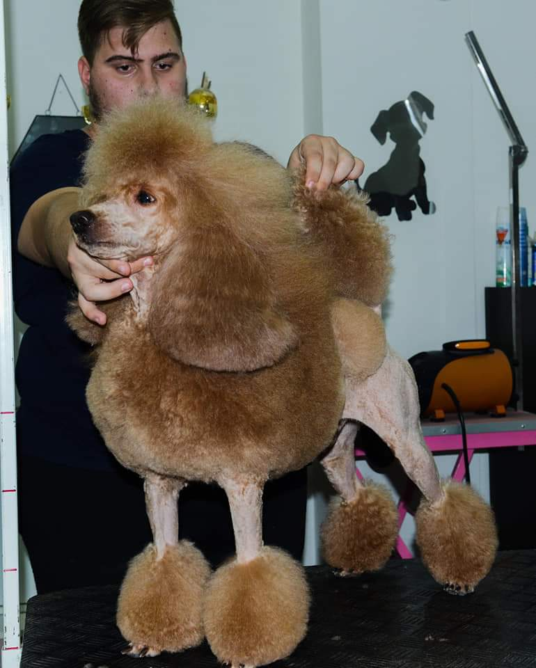Leo in continental clip! Grooming by brilliant groomer Bojana Ilic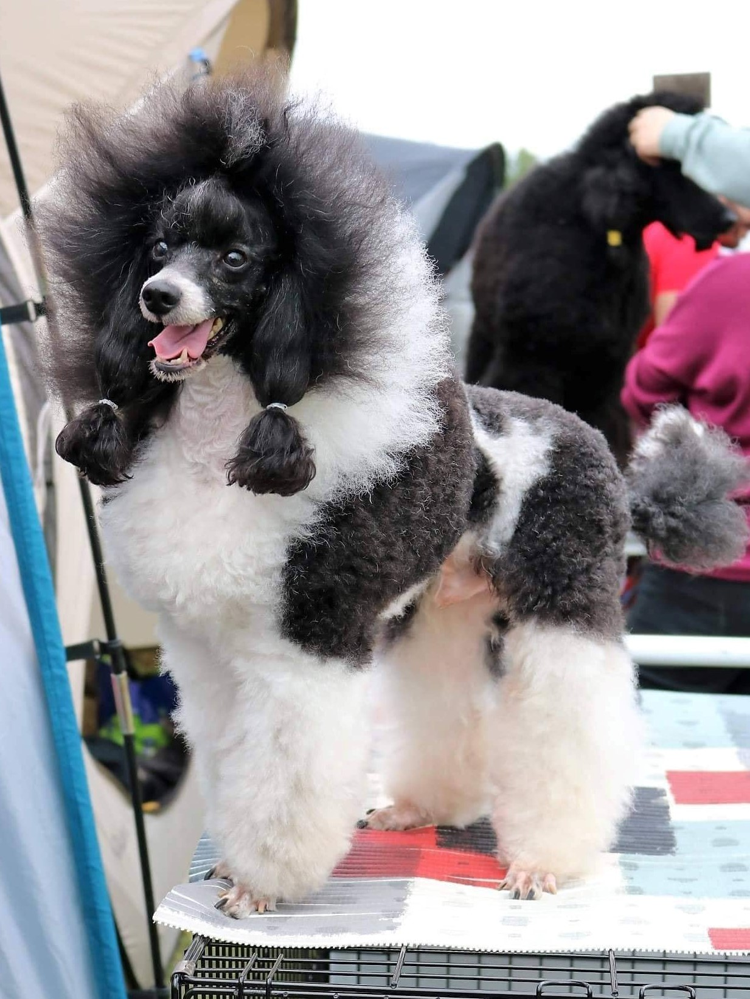Jo-Jo resting before a show 1/2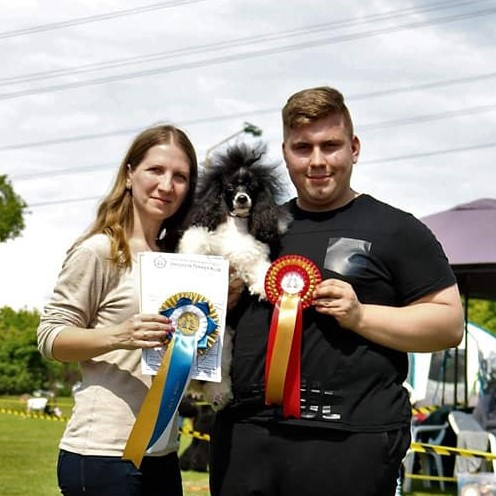Jo-jo on Budapest CACIB with his owners, Hajnalka and Darko Spasic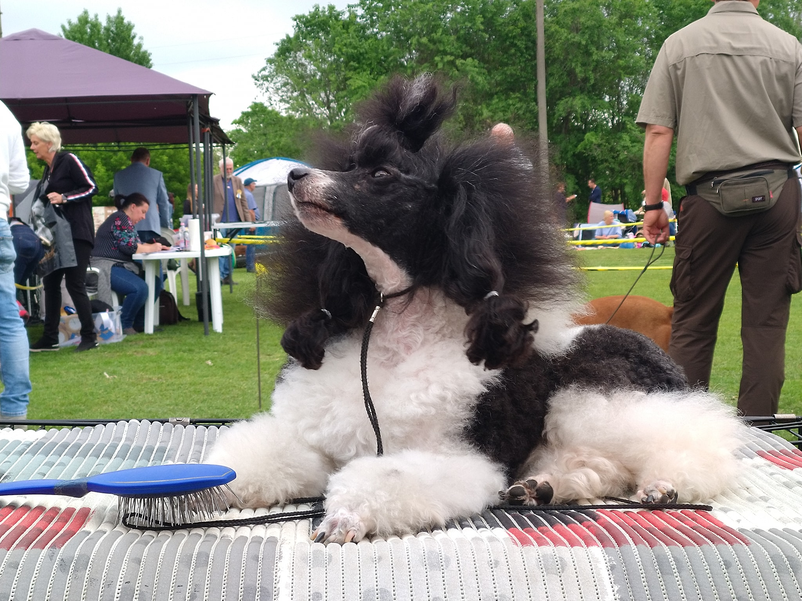Jo-Jo resting before a show 2/2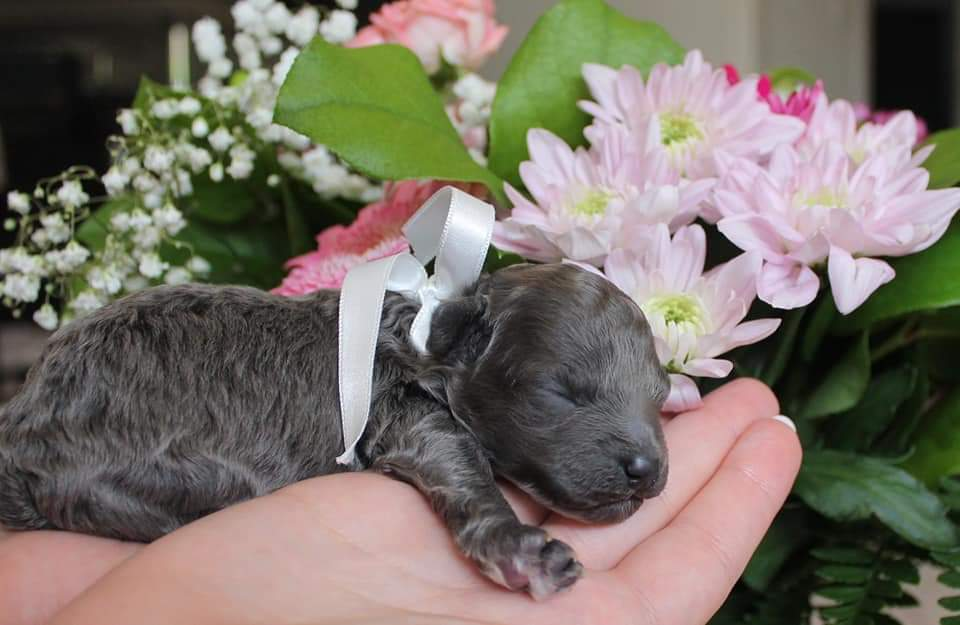Baby Rina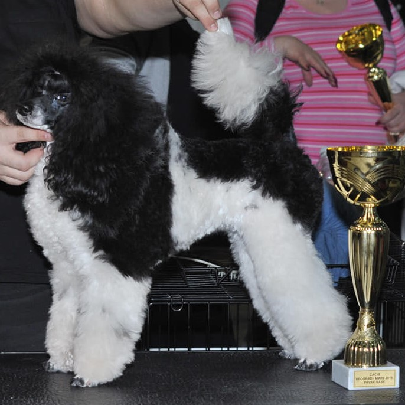Glasha with one of her first awards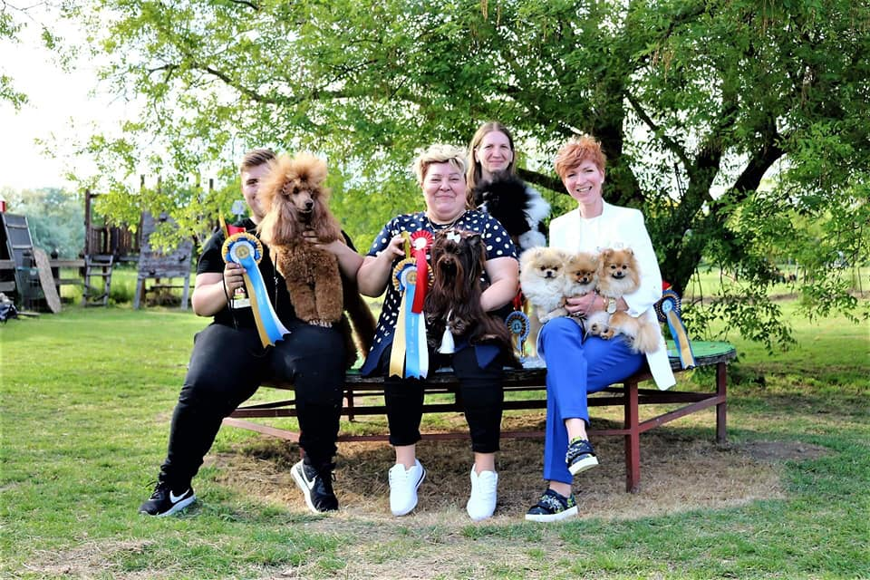On a dog show with our friends from Croatia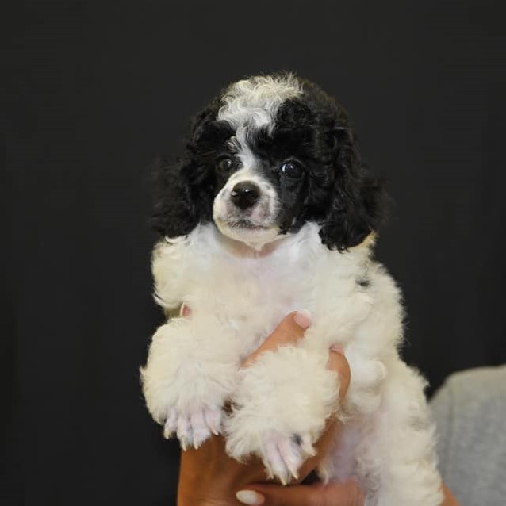Puppy Elipso found his way home in Hungary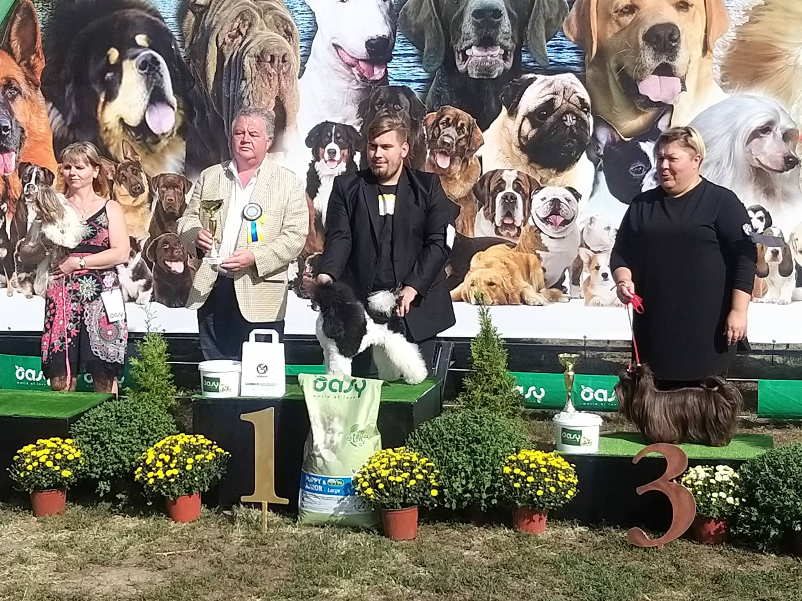"Thank you for your work! Darko made Glasha (GRACE SEA OF HAPPINESS ) champion!"-Kind comment from Tatiana Romanova, Glasha's breederLeo, freshly groomed before a show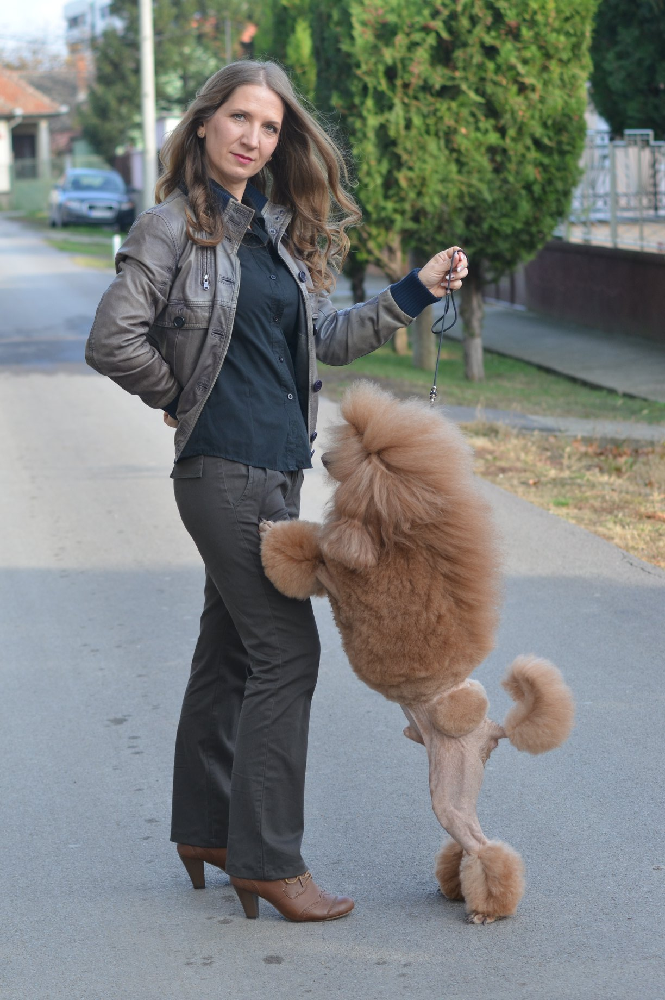Hajnalka Spasic and Leopold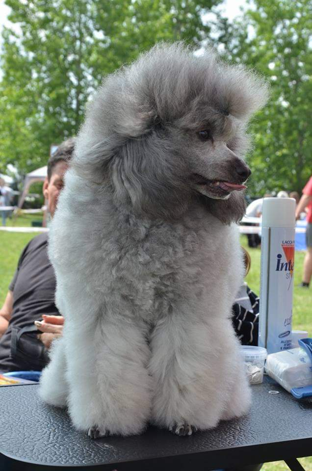 Jessie, final touch-ups before show